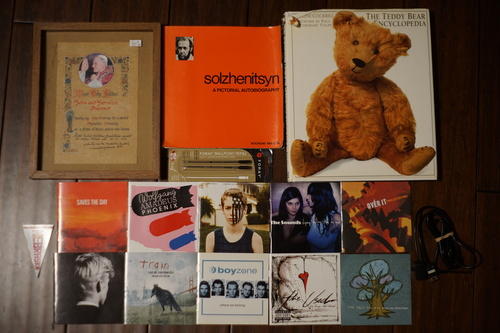

It's confirmed! fran hat is returning to Kumoricon! Can you believe it?! I barely remember my first Kumoricon! I was 17 and convinced a friend to take me there for a day. I debuted my moot-tan cosplay and had a lot of fun. I was even given an aggressively free hug by a passerby. Are you out there, hugger?? Did you enjoy it! I hope so! I had been to a sci-fi con that had been misappropriated by local anime fans, but this was my first real, honest to god anime convention!
I have big plans for funmaxxing. I'm trying to find the BJD meetup which seems to be gatekept by Discord, as usual. Maybe someone will pass me the info. Please?? I'll send you photos of your dolls if you do~ Linus and I will have to plan another fountain pen meetup. I hope Teezy will come this time!
Should I bring Cheby? Volta?? Will their 1.5kg butts be too heavy for my wimpy arms?! It really is a struggle to carry them and my camera. Hina misbehaved at Sakuracon by throwing off her wig 5 times. She is not invited.
I got distracted before Sakuracon with my self inflicted and unnecessary con crunch of modifying my PC98 Alice underskirt and wasn't able to finish a business card for myself. Linus saved the day and designed one for me, but I want to actually finish my design this time!

I actually plugged in my WiiU and started playing it the other day. Did you know the gamepad can play Wii games?! No sensor bar needed! What a cool system...
Every time I pick it up I'm like "this system is so cool!!!" and then I pick up my Switch and think "wow, this is a really thin and lightweight console!" It's too bad the library is so small. It's a pretty cool console.

I've been stopping myself from buying this one every time I visit this thrift store and Ryan told me to buy it this time. I love bear.
More whiny emo boiz.
Wait is this song isn't about Franz Liszt??? Coolest find about this CD, which is unrelated to this CD is this!
dafuq is the title song?? this is terrible.
Tough girl music.
pop punk boiz
Never heard of him but he sounds like the more boring part of Justin Bieber's career. He's writing songs about gay b*****x if you are into that kinda stuff...
It's fine. Not sure I would choose to listen to it because there are better albums out there.
Pretty generic boyband with lots of slower songs.
I own a button pin of them yet know none of their music? Total poser!! It's very emo with a little screaming, but not too much.
I didn't expect much from this but I was pleasantly surprised with the "Sucker Punch". The rest is just okay.
I have to wonder what the use case for this is. How long do your arms have to be for this to be useful?
It's like a small folder clearfile. I don't know what the name for it is.
It was sold in a baggie for a replacement shell. I assume the replacement shell was put on the gamepad and this is the original, because it looks OEM. They also forgot to remove the stylus!!! A replacement analog stick was also included.
I'm going to beg and plead until I get this thing signed!
You wouldn't believe how many fountain pen cases I have now